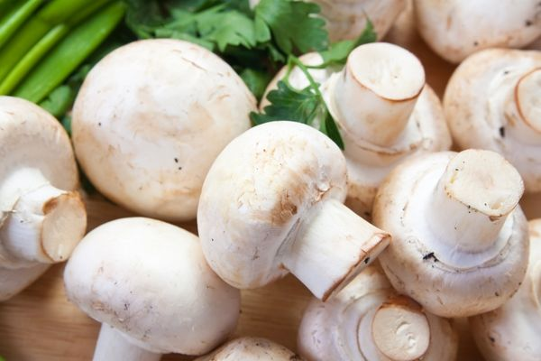
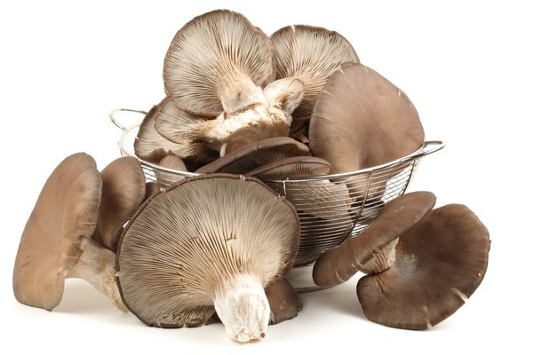
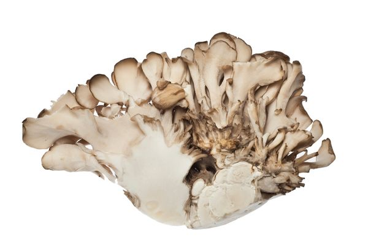

Ozcan Sert
Hakkimda
Oncelikle 2 adet patatesi yikayip dograyalim. Ardindan 2 adet havucumuzu ufak ufak dilimleyelim. Bu sirada eger kettle'a su koyarsak isindigi zaman derhal kullanabiliriz.
Ardindan soganlarimizi ince dogranmis halleriyle daha oncesinden yagladigimiz tenceremizde pembelesinceye kadar kavuralim.
En sevdigim protein deposu baklagil
Bezelye
Bence bezelye gercektende muthis bir sebze. Mantar sevdam ile yarisir derecede. Neyse, devam edelim
Bildigimiz gibi bu html sandiginiz gibi gitmemekte. Bende eglenmeye calisiyorum. Arada da bezelye tarifi vereyim dedim. Malum calisirken acikiyoruz. Tarifin devamini tahmin ediyorsunuzdur.
Butun sebzeleri (patates, havuc, bezelye) ve salcayi tencereye atip uzerine de isittigimiz suyu ekleyelim. 30 dakika sonra afiyetle yiyelim
Afiyet olsun
Cok Cesitli Ilgi Alanlarim
Mantarlar
-
Portobello Mantari


-
Doğada kendiliğinden yetişmeyen bu mantar türü, bir çeşit kültür mantarıdır.
-
Oldukça büyük bir mantar türü olan Portobello mantarı, özellikle vejetaryenler tarafından beğenilir.
-
Demir ve vitamin ihtiyacını karşılayan Portobello mantarı sayesinde enerji ihtiyacınızı da tamamlamış olursunuz.
-
Istiridye Mantari


-
Olası bir nükleer saldırı sonrasında çevreyi radyoaktif atıklardan temizlemek amacıyla kültür ortamında yetiştirilen İstiridye mantarı, kendine has lezzeti ve aroması ile en çok sevilen mantar çeşitlerinden biridir.
-
Reishi Mantari


-
Alkalaoitler, polisakkaridler, mineraller, vitaminler ve steroller içeren Reishi mantarı kan oksijenlenmesini artırır.
-
Kolesterolü ve tansiyonu düşürür. Karaciğer hastalıklarının tedavisinde önemli rol oynar.
-
Bağışıklık sistemini destekler.